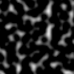
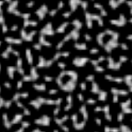
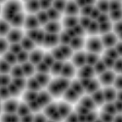
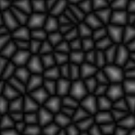
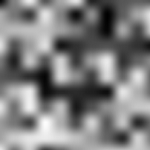
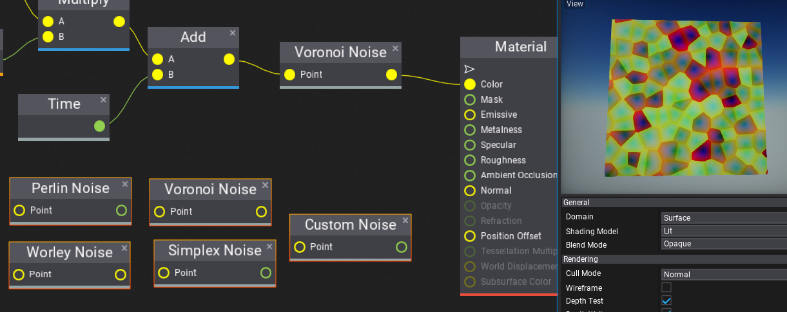

Noise
Flax contains various utilities for sampling different noise functions such as:
| Noise | Preview |
|---|---|
| Perlin |  |
| Simplex |  |
| Worley |  |
| Voronoi |  |
| Custom |  |
Those can be accessed via scripting FlaxEngine.Utilities.Noise static class and used to enrich procedurally generated worlds and content.
Noise in Materials/Particles

All visual graphs (materials, particles, animations) can sample noise functions both on CPU and GPU to enrich the content. All noise functions return normalized results in the range 0-1. Some of them return more noise components, such as Voronoi Noise where X=minDistToCell, Y=randomColor, Z=minEdgeDistance. Depending on the context only one or even all components can be used. Follow the tooltip with documentation for every node.
Noise preview control
Below is a sample code for custom UI Control that can be added to the scene for debugging or testing different noise types visually. Simply create UI Canvas, add UI Control to it, set control type to NoisePreview, and use NoiseType with NoiseScale properties to analyze noises.
public class NoisePreview : ContainerControl
{
private GPUTexture _tempTexture;
private byte[] _data;
private Noises _noise = Noises.None;
private float _scale;
public enum Noises
{
[HideInEditor]
None,
Perlin,
Simplex,
Voronoi,
Worley,
Custom,
}
/// <summary>
/// Noise to preview.
/// </summary>
public Noises NoiseType = Noises.Perlin;
/// <summary>
/// Noise scale.
/// </summary>
[Limit(0.001f)]
public float NoiseScale = 10.0f;
/// <inheritdoc />
public NoisePreview()
{
Size = new Float2(64);
}
/// <inheritdoc />
public override void DrawSelf()
{
base.DrawSelf();
if (!_tempTexture)
{
// Create new GPU texture
var texture = new GPUTexture();
_tempTexture = texture;
var desc = GPUTextureDescription.New2D(64, 64, PixelFormat.R8G8B8A8_UNorm, GPUTextureFlags.ShaderResource);
if (texture.Init(ref desc))
return;
}
if (_noise != NoiseType || _scale != NoiseScale)
{
// Update noise texture
_noise = NoiseType;
_scale = NoiseScale;
UpdateTexture();
}
// Draw noise texture
Render2D.DrawTexture(_tempTexture, new Rectangle(Float2.Zero, Size));
}
/// <inheritdoc />
public override void OnDestroy()
{
// Ensure to cleanup resources
_tempTexture?.ReleaseGPU();
FlaxEngine.Object.Destroy(ref _tempTexture);
base.OnDestroy();
}
private unsafe void UpdateTexture()
{
var desc = _tempTexture.Description;
var size = desc.Width * desc.Height * PixelFormatExtensions.SizeInBytes(desc.Format);
if (_data == null || _data.Length != size)
_data = new byte[size];
fixed (byte* dataPtr = _data)
{
// Generate pixels data
Float2 uv;
var colorsPtr = (Color32*)dataPtr;
for (int y = 0; y < desc.Height; y++)
{
uv.Y = (float)y / desc.Height * _scale;
for (int x = 0; x < desc.Width; x++)
{
uv.X = (float)x / desc.Width * _scale;
// Sample noise at uv location
var noise = Vector3.Zero;
switch (_noise)
{
case Noises.Perlin:
noise = new Vector3(FlaxEngine.Utilities.Noise.PerlinNoise(uv));
break;
case Noises.Simplex:
noise = new Vector3(FlaxEngine.Utilities.Noise.SimplexNoise(uv));
break;
case Noises.Voronoi:
noise = FlaxEngine.Utilities.Noise.VoronoiNoise(uv);
break;
case Noises.Worley:
noise = new Vector3(FlaxEngine.Utilities.Noise.WorleyNoise(uv), 0.0f);
break;
case Noises.Custom:
noise = new Vector3(FlaxEngine.Utilities.Noise.CustomNoise(new Float3(uv, 0.0f)));
break;
}
colorsPtr[y * desc.Width + x] = (Color32)(Color)noise;
}
}
// Update texture data on a GPU (send data)
uint rowPitch = (uint)size / (uint)desc.Height;
uint slicePitch = (uint)size;
GPUDevice.Instance.MainContext.UpdateTexture(_tempTexture, 0, 0, new IntPtr(dataPtr), rowPitch, slicePitch);
_tempTexture.ResidentMipLevels = 1; // Mark mip-map as available (required for standard textures only - other than render textures)
}
}
}